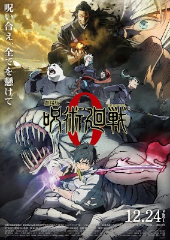

.png)
 |
 |
 |
||
|---|---|---|---|---|
| Personagems | Personagems | Personagems | ||
Denji, Reze, Makima, Aki Hayakawa, Power, o demônio tubarão Beam e o mentor Kishibe
SinopseDenji finalmente vive como o temido Homem-Motosserra, um jovem com coração de demônio que integra a Divisão Especial 4 de Caçadores de Demônios. Depois de um encontro marcante com Makima, a mulher de seus sonhos, ele busca refúgio da chuva e acaba conhecendo Reze, a misteriosa atendente de um café.Tempo de Duração1h:40m |
yuta Okkotsu, assombrado pela maldição de sua amiga de infância, Rika Orimoto, e seu mentor, Satoru Gojo
SinopseO jovem Yuta Okkotsu ganha o controle de um espírito extremamente poderoso, então um grupo de feiticeiros o matricula na Escola Técnica Prefeitural de Jujutsu de Tóquio, para ajudá-lo a controlar esse poder e também para ficar de olho nele.Tempo de Duração1h:28m |
Tanjiro Kamado, Nezuko, Zenitsu Agatsuma e Inosuke Hashibira
SinopseDemon Slayer: Kimetsu no Yaiba - Castelo Infinito (2025) é o primeiro filme da trilogia final que adapta o clímax do mangá. Tanjiro, Nezuko, Zenitsu, Inosuke e os Hashiras invadem a fortaleza dimensional de Muzan Kibutsuji para uma batalha decisiva contra as Luas Superiores e o rei dos demônios, buscando vingança e a cura de NezukoTempo de duração2h:35m |